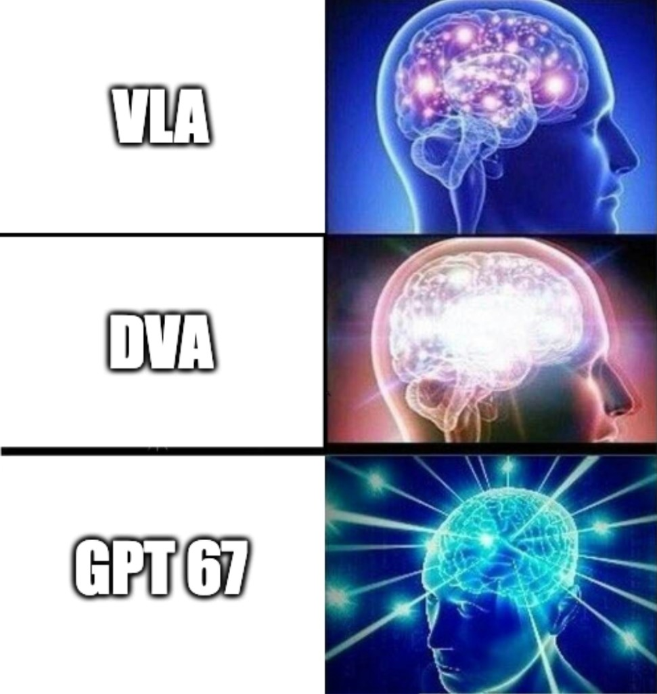
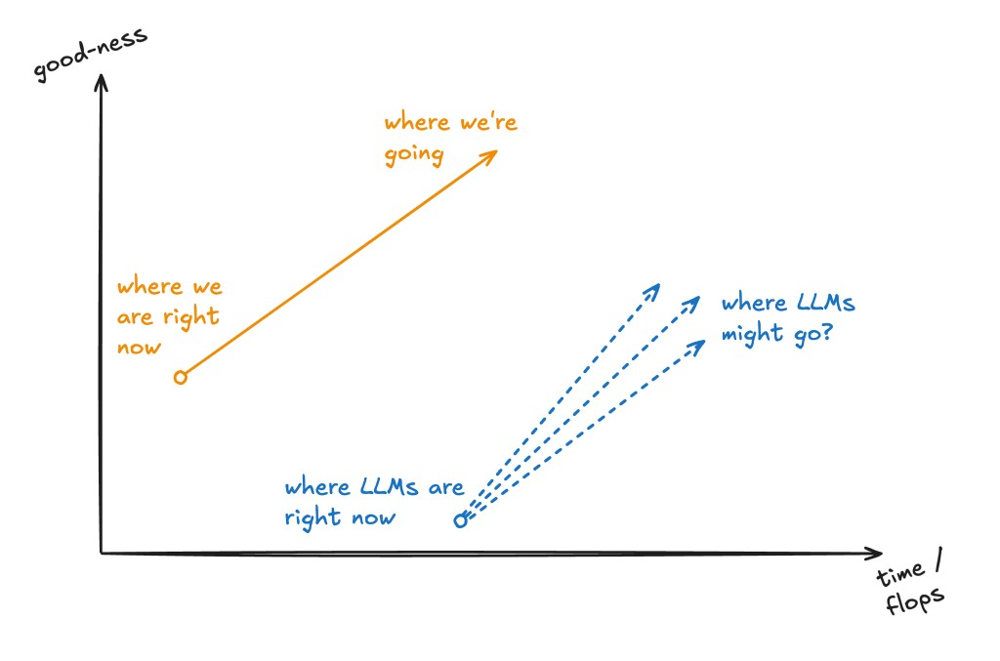

Does Robotics Go Into the LLM Hole Too?
November 15, 2026
I get asked about what I think about LLMs doing robotics several times a week, so I figured I should write something about it.
TL;DR: it's not over.
Many people (and for some time myself as well) think about LLMs doing robotics as GPT 8 or Fable 7 outputting 1,000 tokens/sec, zero-shot-ing every imaginable robot taskAs well as basically any other task we could think of.. Whether such a model can exist is up to discussion, but of course if we are comparing to this oracle LLM, we will lose, obviously.

In this post, we will first discuss practical considerations for modeling robot policies. Then, we will indulge ourselves, and consider modeling in the limit.
The models, they just want to scale
LLMs are clearly capable, and they have shown us that models at enormous scale can generalize to entire capabilities that they weren’t trained for (allegedly). We trained for visual reasoning, blender, CAD, image generation, and we got robotics out. Isn’t that just remarkable?
If you believe in the scaling laws of other modalities (which I do), then this might imply that we have many wonderful surprises waiting for us at the end of our scaling rainbows. We are already seeing signs of this: we know that the stronger our pre-trained base gets, the less post-training data we need, and the better our post-training becomesDoes Scaling Web-Video Pre-training Help Real Robots Do Real Work? (Rhoda AI Team, 2026). LBM 2.0: Accelerating Learning in Deployment (Walden Robotics, 2026). Gen 1.5: Accelerating Learning in Deployment (Generalist Team, 2026)..
We know that the models will continue to improve the more we scale. The real question is if our slope is steeper than that of LLMs.

a
Modeling in the limit
Edited November 15, 2026